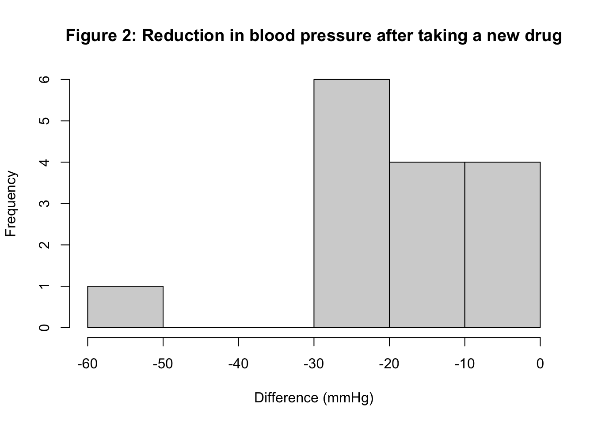

Module 9: Solutions to Learning Activities
Activity 9.1
There is a hypothesis that university students who live and dine in the university hall consume less vitamin C than the students who live and dine at home. To test the hypothesis, 30 students were randomly selected and their urinary ascorbic acid level was measured in mg over 3 hours. Urinary excretion of ascorbic acid is a measure of vitamin C nutrition in humans. The data is given as ActivityS9.1.rds.
- Examine the distribution of the data using a box-plot and histogram.
library(jmv)
diet <- readRDS("data/activities/Activity_S9.1.rds")
head(diet)## dint ascorb
## 1 Living and dining in hall 7
## 2 Living and dining at home 22
## 3 Living and dining in hall 9
## 4 Living and dining at home 25
## 5 Living and dining in hall 14
## 6 Living and dining at home 30hall <- subset(diet, dint=="Living and dining in hall")
home <- subset(diet, dint=="Living and dining at home")
# Set the graphics parameters to plot 2 rows and 2 columns:
par(mfrow=c(2,2))
# Specify each plot separately
hist(hall$ascorb, xlab="Ascorbic acid (mg / 3 hr)",
xlim=c(0, 400), main="Living and dining in hall")
hist(home$ascorb, xlab="Ascorbic acid (mg / 3 hr)", main="Living and dining at home")
boxplot(hall$ascorb, ylab="Ascorbic acid (mg / 3 hr)",
ylim=c(0, 400), main="Living and dining in hall")
boxplot(home$ascorb, ylab="Ascorbic acid (mg / 3 hr)", main="Living and dining at home")par(mfrow=c(1,1))By examining the box plots and histograms we can say that ascorbic acid data for both of the student groups are highly positively skewed as well as highly peaked with some outliers that are biologically plausible.
- Which statistical test would be appropriate to test the hypothesis mentioned in the question and why?
Following the decision tree, the response variable is continuous (concentration of urinary ascorbic acid) and the explanatory variable is categorical (residential and dining status of the students) with two groups (binary). The two groups are independent as students either live at home or at university, not both. As evident from (a) the distribution of the response variable for both of the groups is highly positively skewed and peaked. Therefore, a distribution free (non-parametric) test would be appropriate to analyse the data. Because the distribution of both of the groups (Hall and Home) are positively skewed, that is they are of the same shape, the Wilcoxon rank-sum test would be appropriate to test the difference in medians.
- State the hypothesis appropriate to the analytical method you mentioned in (b)?
Null hypothesis: The median concentration of urinary ascorbic acid among the students who live and dine in the university hall is the same as that of the students who live and dine at home. Alternative hypothesis: The median concentration of urinary ascorbic acid among the students who live and dine in the university hall is not same as that of the students who live and dine at home.
- Use R to carry out the statistical test you have mentioned in (b) and write your conclusion.
We can use the
wilcox.test()function to carry out the Wilcoxon rank-sum test.
wilcox.test(ascorb ~ dint, data=diet)## Warning in wilcox.test.default(x = c(7, 9, 14, 16, 20, 22, 27, 28, 28, 34, :
## cannot compute exact p-value with ties##
## Wilcoxon rank sum test with continuity correction
##
## data: ascorb by dint
## W = 45.5, p-value = 0.006927
## alternative hypothesis: true location shift is not equal to 0The P-value from the test is 0.007, which indicates that there is strong evidence of a difference between the median values of urinary ascorbic acid between the two student groups. The Wilcoxon rank-sum test does not report median values of the individual groups as part of the output. To include median values in the conclusion, we need to run the
descriptives()command as shown below.
descriptives(data=diet, vars=ascorb, splitBy = dint,
pc=TRUE) ##
## DESCRIPTIVES
##
## Descriptives
## ───────────────────────────────────────────────────────────────
## dint ascorb
## ───────────────────────────────────────────────────────────────
## N Living and dining in hall 17
## Living and dining at home 13
## Missing Living and dining in hall 0
## Living and dining at home 0
## Mean Living and dining in hall 36.64706
## Living and dining at home 114.2308
## Median Living and dining in hall 28.00000
## Living and dining at home 83.00000
## Standard deviation Living and dining in hall 27.91044
## Living and dining at home 106.2302
## Minimum Living and dining in hall 7.000000
## Living and dining at home 22.00000
## Maximum Living and dining in hall 121.0000
## Living and dining at home 372.0000
## 25th percentile Living and dining in hall 20.00000
## Living and dining at home 47.00000
## 50th percentile Living and dining in hall 28.00000
## Living and dining at home 83.00000
## 75th percentile Living and dining in hall 38.00000
## Living and dining at home 163.0000
## ───────────────────────────────────────────────────────────────Conclusion: There is strong evidence from Mann-Whitney U test (exact P = 0.007) that the median concentration of urinary ascorbic acid among the university students who live and dine at home (83 mg per 3 hours, interquartile range: 47 to 163) is higher than that of the students who live and dine in the university hall (28 mg per 3 hours, interquartile range: 20 to 38).
Activity 9.2
A drug was tested for its effect in lowering blood pressure. Fifteen women with hypertension were enrolled and had their systolic blood pressure measured before and after taking the drug. The data are available in the file Activity_S9.2.rds on Moodle.
- State the research question and the null hypothesis.
Research question: Do women with hypertension have lower systolic blood pressure after taking the test drug than before taking the drug?
Null hypothesis: There is no change in median systolic blood pressure before and after taking the drug.
- Use R to obtain suitable summary statistics and test the null hypothesis. Describe the reason for choosing the test.
Systolic blood pressure was measured for each person twice to compare the difference in blood pressure before and after taking the drug. Therefore, the study is a paired design and, because blood pressure is a continuous measurement, a paired t-test can be considered. One of the assumptions of a paired t-test is that the differences between the measurements are normally distributed and this needs to be checked.
To check the distribution of the differences between the measurements, we first need to calculate the differences. We created a new variable ‘difference’ using the equation ‘BP_After_mmHg − BP_Before_mmHg’. The histogram of the differences is shown in Figure 2.
bp <- readRDS("data/activities/Activity_S9.2.rds")
head(bp)## id bp_before_mmhg bp_after_mmhg difference
## 1 1 143 120 -23
## 2 2 150 124 -26
## 3 3 140 130 -10
## 4 4 139 118 -21
## 5 5 141 140 -1
## 6 6 144 128 -16hist(bp$difference,
main="Figure 2: Reduction in blood pressure after taking a new drug",
xlab="Difference (mmHg)")
# Note - histogram differs from Stata, as R uses intervals as (a, b], where as Stata uses [a, b).The histogram of the differences (BP_After – BP_Before) does not approximate a normal distribution. Therefore, the paired t-test is not appropriate and its non-parametric equivalent, the Wilcoxon signed rank test, should be considered. The Wilcoxon signed rank test is obtained using the
wilcox.test()function:
wilcox.test(bp$bp_before_mmhg, bp$bp_after_mmhg, paired=TRUE)## Warning in wilcox.test.default(bp$bp_before_mmhg, bp$bp_after_mmhg, paired =
## TRUE): cannot compute exact p-value with ties##
## Wilcoxon signed rank test with continuity correction
##
## data: bp$bp_before_mmhg and bp$bp_after_mmhg
## V = 120, p-value = 0.0007158
## alternative hypothesis: true location shift is not equal to 0- Write a brief conclusion.
To include descriptive summary statistics in our conclusion we need to obtain summary statistics of the blood pressure measurements before and after taking the drug and the differences between these two measurements.
descriptives(data=bp, vars=c(bp_before_mmhg, bp_after_mmhg, difference),
pc=TRUE)##
## DESCRIPTIVES
##
## Descriptives
## ───────────────────────────────────────────────────────────────────────
## bp_before_mmhg bp_after_mmhg difference
## ───────────────────────────────────────────────────────────────────────
## N 15 15 15
## Missing 0 0 0
## Mean 146.4667 129.2667 -17.20000
## Median 144.0000 128.0000 -16.00000
## Standard deviation 10.75617 6.902036 13.41215
## Minimum 139.0000 118.0000 -57.00000
## Maximum 183.0000 140.0000 -1.000000
## 25th percentile 140.5000 125.5000 -21.00000
## 50th percentile 144.0000 128.0000 -16.00000
## 75th percentile 146.5000 132.5000 -8.000000
## ───────────────────────────────────────────────────────────────────────The median (IQR) SBP before and after taking the drug was 144 (140 to 147) mmHg and 128 (125 to 135) mmHg, respectively. The median (IQR) reduction in SBP is 16 (6 to 21) mmHg. There is very strong evidence that the drug lowered blood pressure in this group of hypertensive women (Wilcoxon P = 0.0007).
- What are the main limitations of this study? Consider both epidemiological and statistical aspects.
The samples were selected from a small patient group with particular characteristics (hypertensive females). While the results may be generalisable to hypertensive women in the population, assuming the sample is representative of hypertensive women in the population, the results may not be applicable to men. The strongest weakness is that there is no control group; the blood pressure in the women may have in fact lowered in the absence of taking the drug. This could be avoided by conducting a randomised controlled trial.